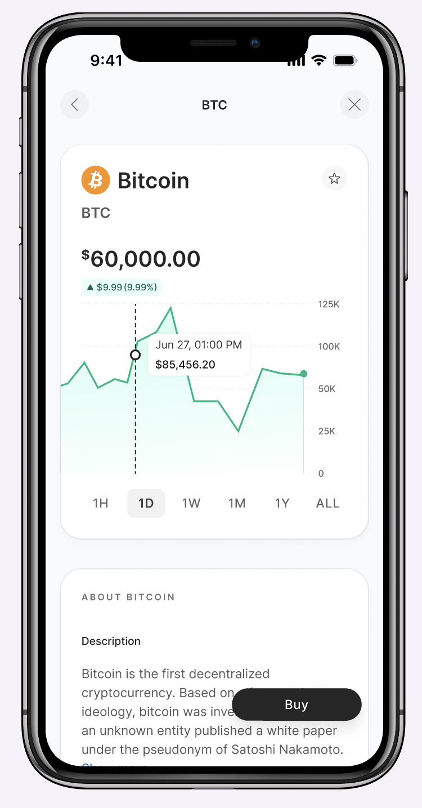
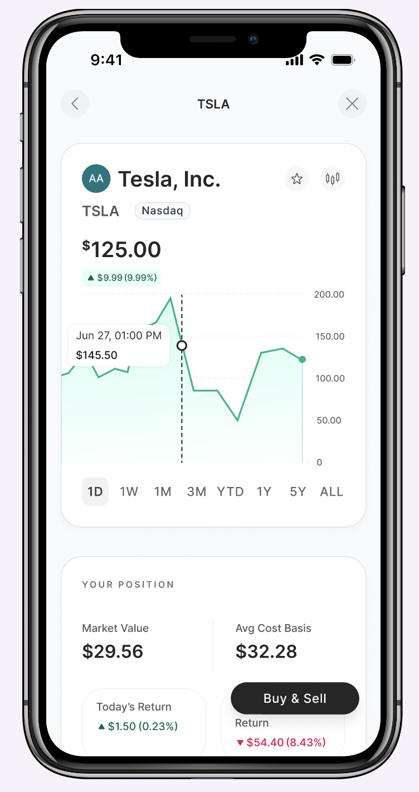
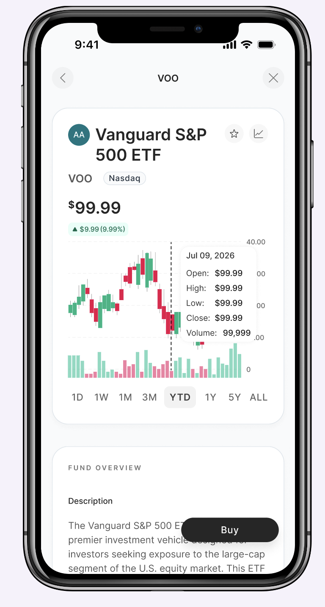
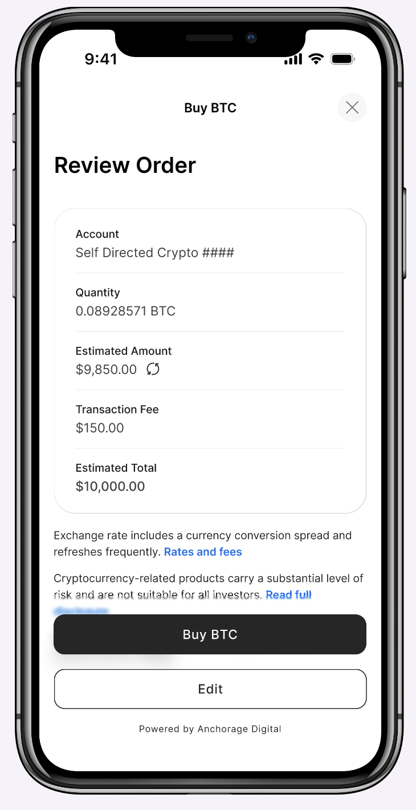
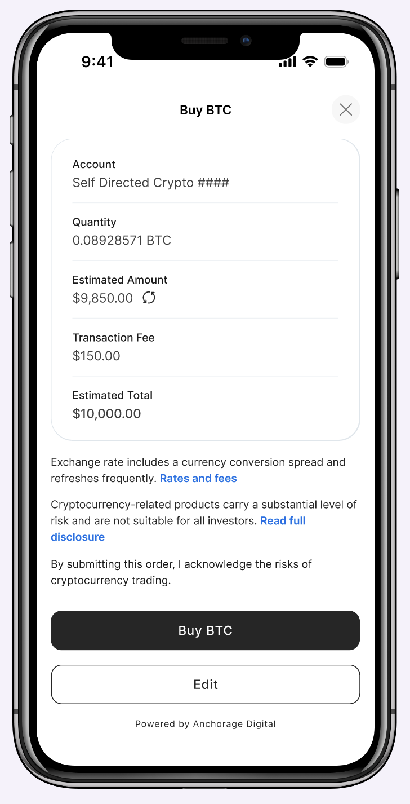

Introducing Bitcoin trading to Axos customers.
Designing Axos's first crypto trading experience, from research to order review, so Bitcoin feels like a natural part of the product customers already use to trade stocks.

A new asset class, built into a familiar product.
Before this project, Axos had no crypto account and no way to trade Bitcoin. I designed the trading experience from scratch: how customers find and research Bitcoin, how they place a buy or sell, how fees and limits show up, and how someone without a crypto account discovers and opens one.
It also had to live inside Axos's existing self-directed trading product. Bitcoin shares search and research with stocks, ETFs, and mutual funds, so it needed to feel like part of the same product, even though it runs on a separate account and a third-party custodian with its own fees, limits, and rules.
Where things got complicated.
- No internal precedent. Axos had never offered crypto, so every pattern, from the research page to the order review, had to be designed from scratch.
- Two accounts, one interface. Search and research had to work for everyone, even though buying Bitcoin only works with a crypto account.
- Customers shouldn't get stuck. A customer without a crypto account should still be able to look around and try the order flow before deciding to open one.
- Bitcoin comes with its own costs. Trading fees and daily limits apply only to crypto, because of how the custodian holds it.
- The rules kept changing. Order types, fees, and limits weren't locked in from day one.
- Customers already use Robinhood and Coinbase. Neither deals with two separate accounts or custody rules, so expectations were set before anyone touched ours.
Letting people look before they commit.
Search works the same for everyone no matter which account they have. The account requirement only comes up when someone actually tries to place a trade. A customer with a trading account but no crypto account can research Bitcoin and even build out an order, but they'll see a prompt to open a crypto account once they go to confirm it. I wanted that moment to feel like a natural next step rather than a wall, so letting people try the order flow first, before asking them to open anything, was the whole point.
Familiar structure, honest content.
The Bitcoin research page is a deliberate sibling of the stock and ETF pages: same chart, same buy panel, same layout, so anyone who already trades with Axos knows how to read it. But Bitcoin doesn't have analyst ratings, earnings, or dividends, so its page is just shorter instead of filled with empty sections pretending to be useful.


As simple as the asset allows.
Bitcoin only supports market orders, so the buy panel is a buy or sell toggle and a dollar amount. Type it, review it, confirm it. There's no order-type picker for options that don't exist. Buying and selling share the same order-entry logic as stocks, just with fewer steps, so the experience feels consistent without carrying complexity Bitcoin doesn't need.
No surprises at the confirm button.
Because the custodian holds Bitcoin on Axos's behalf, crypto trades come with a transaction fee and a daily limit that stocks and funds don't have. I didn't want either to be a surprise. The daily limit shows up while someone's still typing in their amount, so they can see what they have left before they hit a wall, and the fee shows up clearly in the order review alongside the estimated total.

A review screen written for Bitcoin.
Bitcoin's price updates continuously, so the review screen shows the market price and an estimate rather than a fixed quote. The disclosure right above the confirm button speaks specifically to crypto volatility, not generic investment risk, so it reads as relevant to the decision in front of the customer instead of fine print to scroll past.

Working without a stable spec.
The custodian was still learning its own product, so guidance on order types, fees, and limits kept changing and sometimes contradicted earlier answers. At the same time, the business hadn't fully decided what it wanted, so requirements could shift before I finished designing for the last version.
I built the order-type, fee, and account logic as configurable rules instead of hardcoding anything, so a change meant updating one setting instead of redoing a screen. But the bigger part of the work was pushing back: asking the custodian to clarify its answers instead of taking the first one, and asking the business to commit to decisions instead of leaving them open. You can't design well around a moving target unless you're also willing to push on what's making it move.
Engineering is building against these flows now, with launch targeted in the next few months. When it ships, Axos customers will be able to research, buy, and sell Bitcoin for the first time, inside the same product they already use to trade stocks. Moving Bitcoin in and out of the account is its own story, covered in the crypto wallet management case study.